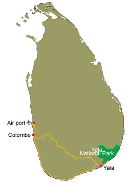
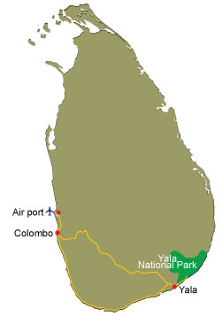
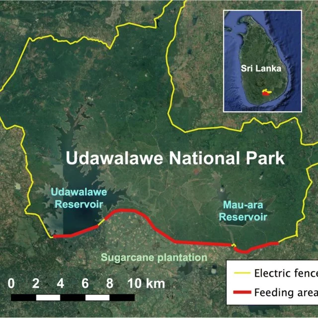
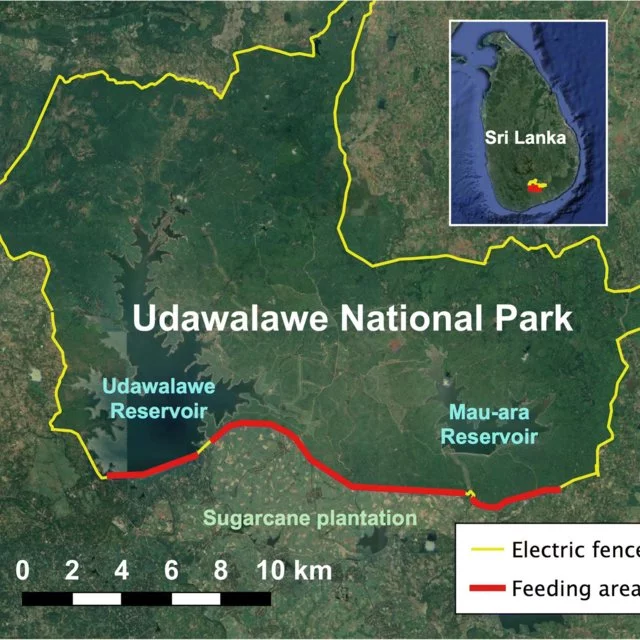

For Your Knowledge : -
| National Park | Plant Species | Animal Species |
|---|---|---|
| Yala | The Neem,Banyan,Beli | Leopards,Jackals,Sloth bear |
| Wilpattu | Palu, Satin,Milla | Water Buffalo,Wild Boar,Deer |
| Udawalawe | Hopea Cadofolia,Vitex pinnata | Elephants,Chital,Hawk |
 

Yala National Park is the most visited and second largest national park in Sri Lanka.
The park consists of five blocks, two of which are now open to the public, and also adjoining parks.
The blocks have individual names such as, Ruhuna National Park (block 1) and
Kumana National Park or ‘Yala East’ for the adjoining area. It is situated in the southeast region of the country,
and lies in Southern Province and Uva Province.
The park covers 979 square kilometres (378 sq mi) and is located about 300 kilometres (190 mi) from Colombo.
Yala was designated as a wildlife sanctuary in 1900, and, along with Wilpattu was one of the first two national parks in Sri Lanka, having been designated in 1938.
The park is best known for its variety of wild animals.
It is important for the conservation of Sri Lankan elephants, Sri Lankan leopards and aquatic birds.

Wilpattu National Park (Willu-pattu; Land of Lakes) is a park located on the island of Sri Lanka. The unique feature of this park is the existence of “Willus” (Natural lakes) – Natural, sand-rimmed water basins or depressions that fill with rainwater. Located in the Northwest coast lowland dry zone of Sri Lanka. The park is located 30 km west Anuradhapura and located 26 km north of Puttalam (approximately 180 km north of Colombo). The park is 1,317 square kilometers (131, 693 hectares) and ranges from 0 to 152 meters above sea level. Nearly sixty lakes (Willu) and tanks are found spread throughout Wilpattu. Wilpattu is the largest and one of the oldest National Parks in Sri Lanka.
 

Udawalawe National Park lies on the boundary of Sabaragamuwa and Uva Provinces, in Sri Lanka. The national park was created to provide a sanctuary for wild animals displaced by the construction of the Udawalawe Reservoir on the Walawe River, as well as to protect the catchment of the reservoir. The reserve covers 30,821 hectares (119.00 sq mi) of land area and was established on 30 June 1972. Before the designation of the national park, the area was used for shifting cultivation (chena farming). The farmers were gradually removed once the national park was declared. The park is 165 kilometres (103 mi) from Colombo. Udawalawe is an important habitat for water birds and Sri Lankan elephants. It is a popular tourist destination and the third most visited park in the country. Udawalawe is an important habitat for Sri Lankan elephants, which are relatively hard to see in its open habitats. Many elephants are attracted to the park because of the Udawalawe reservoir, with a herd of about 250 believed to be permanently resident. The Udawalawe Elephant Transit Home was established in 1995 for the purpose of looking after abandoned elephant calves within the park. A total of nine calves, on two occasions in 1998 and 2000, with another eight calves in 2002, were released in the park when old enough to fend for themselves.
| National Park | Plant Species | Animal Species |
|---|---|---|
| Yala | The Neem,Banyan,Beli | Leopards,Jackals,Sloth bear |
| Wilpattu | Palu, Satin,Milla | Water Buffalo,Wild Boar,Deer |
| Udawalawe | Hopea Cadofolia,Vitex pinnata | Elephants,Chital,Hawk |